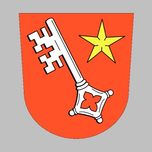

49224469248 Count Robert III de Wormsgau
* 785 Worms, Rheinland-Pfalz, Tyskland
† 832 Worms, Rheinland-Pfalz, Tyskland
Greve av Worms & Rheingau
Blev högst 47 år
* 785 Worms, Rheinland-Pfalz, Tyskland
† 832 Worms, Rheinland-Pfalz, Tyskland
Greve av Worms & Rheingau
Blev högst 47 år

98448938496 Count Robert II de Hesbaye
* 770 Worms, Tyskland
† 807 Worms, Tyskland
Greve av Worms
Blev högst 37 år
* 770 Worms, Tyskland
† 807 Worms, Tyskland
Greve av Worms
Blev högst 37 år

98448938497 Theodorata of Saxony
* omkring 765 Worms, Tyskland
† före 789 Worms, Tyskland
Blev ca 23 år
* omkring 765 Worms, Tyskland
† före 789 Worms, Tyskland
Blev ca 23 år